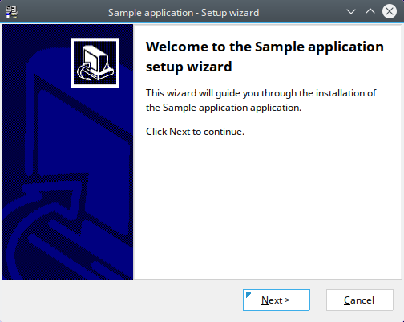
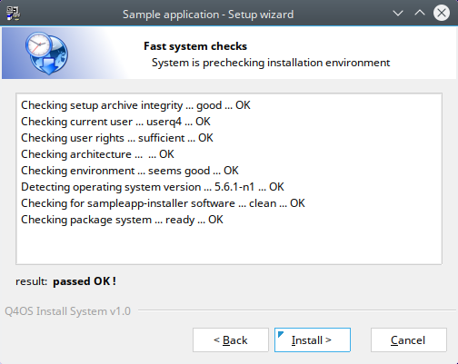
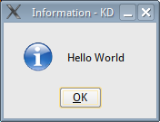

Easy way to create custom application installer, developer manual, rev. 09/2024
developer manual
1. IntroductionThis document describes, how to create Q4OS self-extracting convenient installer for your own applications, files and directory structure. This procedure will create both "*.deb" package for installation with "apt" command, and corresponding "*.qsi" - fully automated, convenient installer. The installer will flawlessly install and deliver the application to Q4OS users.
Before we can proceed creating an application, you need to install Q4OS Development Pack from repositories:
$ sudo apt install q4os-devpack-base
We will get a simple sample application from development pack template, it will represent an application. Run commands in terminal to copy the template, you can use cut and paste into the terminal:
$ cp -r /opt/program_files/q4os-devpack/examples/00_skelet_qinstaller_sample $HOME/my_sample_app
The directory structure in "$HOME/my_sample_app/" represents our application. Let's go to build the installer now.
Finally generate installer:
$ cd $HOME/my_sample_app $ dpkg-buildpackage -b -uc -us -tc
Comfortable ".qsi" installer will be generated in your $HOME directory along with the regular Debian ".deb" package. You can now proceed testing installation of your application double-clicking "setup_sample-app_*.qsi" file.
 Run the application from terminal:
$ sample-app.sh
Upload and publish generated .qsi installer somewhere on the Internet, users will be happy for easy setup of your application.
To remove the installed application, run:
$ sudo apt remove sample-app
Extracting and looking into a compiled ".qsi" installer is easy. Copy the installer file into some working directory and run to extract its content in this directory:
$ sh /usr/bin/xqtrsetups
Easy way to create custom application installer, developer manual, rev. 09/2024